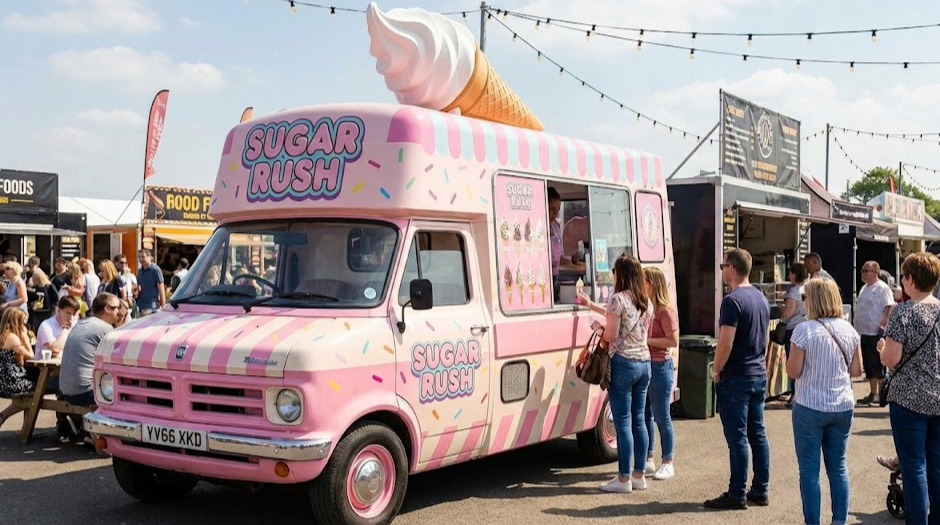

Meet Our Vendors
We feature a rotating lineup of the city's best mobile kitchens. Here are this week's featured trucks:
1. The Taco Tank

Authentic street style Mexican cuisine. Famous for their spicy salsa.
Popular Menu Items:- Carne Asada Tacos
- Al Pastor Burritos
- Fresh Churros
2. The Burger Bus

Classic American smash burgers and crinkle-cut fries served from a vintage bus.
Popular Menu Items:- The Classic Smash
- Cheese Fries
- Vanilla Milkshakes
3. Sugar Rush
The perfect way to end your meal. Sweet treats for everyone.
Popular Menu Items:- Artisan Gelato
- Gourmet Cupcakes
- Iced Coffee